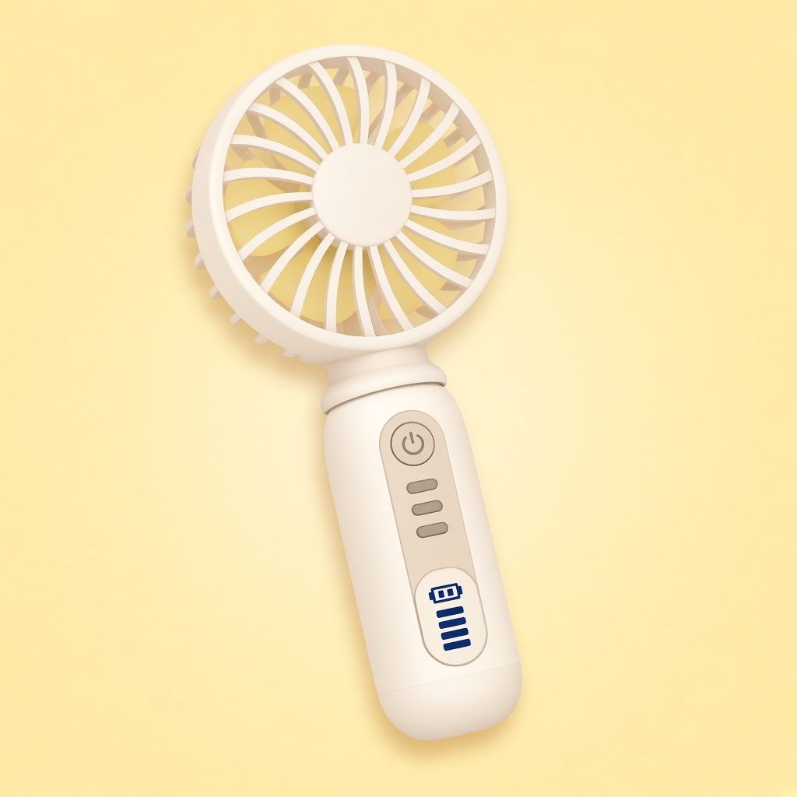

Gambar: ilustrasi, bukan foto produk asli.
Elektronik kecilUlasan: Mini Kipas LED Genggam Turbo
Situs ini memuat link afiliasi Shopee; kami bisa mendapat komisi tanpa biaya tambahan untukmu.
| Harga | Rp26.900 |
| Rating | ★ 4.7 / 5 |
| Terjual | 10RB+ |
Data per 25 Okt 2026, bisa berubah. Cek halaman Shopee untuk info terbaru.
Ringkasan
Kipas genggam mini dengan lampu/indikator LED, sekitar Rp26.900. Terjual 10RB+ dengan rating 4,7.
Cocok untuk
- Pengguna KRL, ojek, atau yang sering menunggu di luar ruangan
- Pelajar di kelas yang panas
Kelebihan
- Harga terjangkau
- Ukuran genggam, mudah dibawa
- Rating 4,7 dari banyak pembeli
Perlu diperhatikan
- Daya tahan baterai dan kekuatan angin perlu dicek di ulasan pembeli
- Kipas mini tidak menggantikan kipas/AC ruangan
Ulasan ini berdasarkan data produk dan rating pembeli, bukan pengalaman pemakaian pribadi.
Beli di ShopeeCerita singkat (fiksi)
Di peron stasiun yang panas, sebuah kipas mini menyala. Satu per satu penumpang mendekat. Lima menit kemudian terbentuk antrean rapi: "Giliran saya diangin-anginin, Mas." Kereta datang, dan si kipas resmi jadi petugas pendingin peron tak resmi.